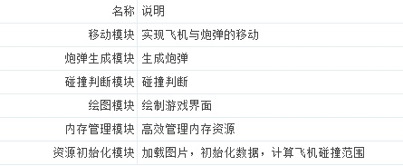
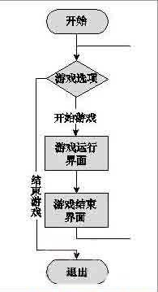
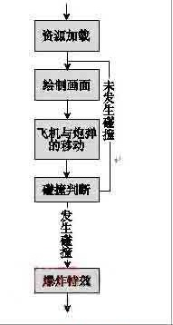
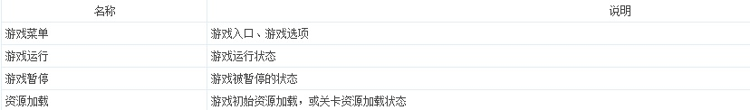
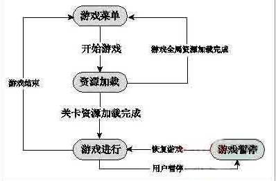

Android 游戏构架
在编写游戏代码之前，必须要仔细地理顺思路，清晰地构建出整个游戏的框架。有的开发者经常抱怨说，游戏开发到最后总是千头万绪，一旦出现Bug就不知道该如何修改。其实不然，只要搭建好了游戏的架构，游戏开发就会比较容易。接下来，将逐步展示《是男人就坚持20秒》游戏架构的搭建过程。
在掌握策划案的基础上，程序员应该迅速作出判断，细分出游戏的功能模块。《是男人就坚持20秒》的功能模块划分如表所示。



完成了项目流程图之后，还不能直接进行Android游戏编程，项目执行流程和游戏运行流程是存在着较大差别的，因为项目流程图只是从用户体验角度（或者策划角度）进行的宏观描述，它只起到过渡作用；而用于编程的流程图则是基于程序角度给出的微观描述，它将涉及到编程的实际环境。因此，我们还需要分析游戏实际运行的流程，即"状态转换"。
是男人就坚持20秒》游戏的状态相对比较简单，只有如表所示的4种状态。

由于这个游戏总共就只有一关，所以关卡资源加载就只能加载唯一的一关资源。
接下来，需要做游戏状态的转换图。状态转换一般通过有限自动机来表示，《是男人就坚持20秒》的状态转换比较简单，下面给出一种状态转换的参考图，如图所示。

如果开发大型的游戏，除了游戏状态转换外，还需要设计sprite状态转换，甚至是特效状态转换，比如玩家控制一个人，这个人可以从行走状态转换为跑步状态，可以从跑步状态转换到跳跃上升状态，跳跃上升状态满足一定的条件后将转换为跳跃下降状态，但是跳跃上升状态是不能直接转换到跑步状态的。可见，行为比较复杂的sprite是需要设计状态转换的。sprite的每一种运动状态将对应一系列的连贯图画。